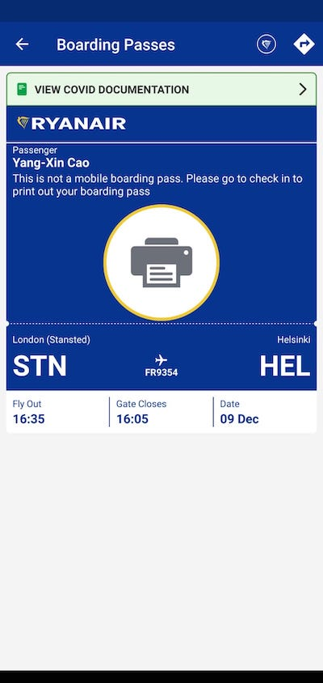

疫情下的芬蘭旅遊 (一)：忐忑不安的行前準備
享受了一段幾個月待在西歐島國風情和冬天的
爛天氣後，適逢年底聖誕節，想去其他歐洲國家旅遊的心蠢蠢欲動。於是 …
還記得出國前，當時台灣充斥著各種有關疫苗副作用的訊息、鋪天蓋地，嚇得當時大家沒人要打 AZ 疫苗。也因為如此，還可以有傳言因為疫苗要放到過期開放自費施打。在那一波沒人要打 AZ 疫苗的我，就在開放自費施打的同時完成接種，並且預約好時間再幾週後接種第二劑出國。
結果，當時台灣突然疫情大爆發 (2021 年 4 月)，搞得人心惶惶的一堆人搶著去打自費 AZ 疫苗，一瞬間，疫苗全部投入醫療量能。
於是乎，我原本自費打完第一劑疫苗並且預約在出國前要打自費第二劑的預約計畫，就在這陣慌亂中被取消。同時還在一陣政治人物的口水戰和操作中，政府就突然生出預算編列，讓原本自費疫苗全面被改成全公費施打1、還爆出非自費也非優先的接種人偷打疫苗爭議2。總之，搞得當時心裡只記得煩躁感，卻也無能為力。
於是，就照原訂計畫帶著第一劑的 Buff，離開台灣，跟第二劑疫苗說再見。
過幾天，人都已經跑到國外，才收到來自台大醫院改期施打第二劑 AZ 疫苗的簡訊，心中當時只有無奈和無力翻的白眼。隨著在歐洲生活遭遇各種麻煩的過程，早已經感到見怪不怪。打開台大醫院的掛號系統，將被改期的疫苗取消。
其實來到歐洲工作一陣子之後。 發現歐洲人的防疫真的是很佛系。
最震撼的是我在從台灣剛下飛機踏上歐洲的時候。雖然規定要在家自主隔離 10 天，但移民官看完你的 PCR 檢測報告放你入境之後，你就可以大搖大擺的直接出關了 (對的，就是直接出關了，沒有什麼防疫計程車)，
你可以出機場後叫計程車、搭公車到達任何你想到的地方，並且在回到家執行隔離政策，不會有人盯著你。這裡沒有像臺灣關在飯店 14 天的隔離政策這嚴謹，也不會有里長打電話關心，更不用每天回報健康狀況，充分感受到歐洲對於人民自主性的放縱。
相對的，也少了那份台灣只要有一個境外移入，就有各種媒體恐嚇和人心惶惶的緊迫感、還有各種對於疫苗防疫的爭論口水戰。疫苗鋪天蓋地的訊息說大家有多害怕副作用，讓每個人怕得要死。在這裡，取而代之的是對於 lockdown 政策的街頭抗議，大家迫不急待的回到以前的生活。每個人都恨不得來上一針疫苗；在這裡，周遭人群即使戴著口罩，也只掩蓋一半，簡直像是臉部的裝飾品，只因為有人希望呼吸到自由的空氣，這種文化衝擊真的是在台灣完全是無法想像的。
有時候不知道是對於人民素養高的信心，還是台灣人被健保慣壞到以至於一點小感冒就充滿警覺，總習慣要跑個醫院，到底是台灣人比較體弱多病呢？還是崇尚個人自由主義的歐洲人不像亞洲講求和諧的文化 (根本管不動)？總之這樣的體驗在搭了飛機橫跨幾個小時的時差後，是衝擊的。
一趟奇妙旅程
在享受了一段幾個月待在西歐島國風情和冬天的爛天氣，也為了認證台灣的施打的第一劑 AZ 疫苗，經歷一番波折，不過，在本地順利取得第二劑 AZ 疫苗後，我就取得了歐盟的疫苗護照 (EU Digital COVID Certificate)，滿足在歐洲自由通行的必要條件。
加上適逢年底聖誕節，想去其他歐洲國家旅遊的心蠢蠢欲動。於是三五好友揪一揪，跟著在歐洲的朋友們，興致沖沖的整週都在討論去歐洲哪個國家晃一晃。最後我們花了整週的時間決定聖誕節要去聖誕老人的故鄉芬蘭玩一趟，踏上尋找 Santa Claus 的奇幻旅程。
結果不出所料，整趟確實充滿驚險及刺激，且聽我娓娓道來。
忐忑不安的 Omicron
歐洲在下半年許多國家都已經開放旅遊，只要持有疫苗護照，不需要 PCR 報告就能往來許多歐洲地區，出入境也只需要查看疫苗護照。就在有疫苗護照的一行人決定出團去芬蘭走一趟後，心血來潮的我，也下定決心順便提前跑去倫敦玩個一週晃一晃，並且 12 月 9 號再從倫敦 (London - STN) 直飛芬蘭 (Helsinkin)。
於是一時興起，在 11 月的時候就把去倫敦的機票全部買好了 (London - STN/Gatwick)。
因為接近聖誕節 25 日左右的機票都爆貴，所以原訂計畫打算 12 月初到聖誕前夕休個長假。結果，就在機票訂完的隔幾週，突然非洲開始爆發 Omicron 變種。同時間，日本在 11 月底發布鎖國3。
再來一個瞬間，歐洲各國紛紛將非洲地區旅客列為 Red List 限制入境。這使得原本接近 11 月底預定在倫敦的住宿和計畫的出遊，又增添一股不穩定的因素。然而，因為英國沒有相關的案例紀錄，一開始仍不以為意。結果逼近出發日，英國突然增添零星數十個 Omicron 的案例，瞬間陷入了要出發和不出發之間的糾結。
那種心情真的是非常難以形容，在投入大筆時間規劃行程和金錢預定住宿機票後，面對「放棄」與「堅持」之間的蹺蹺板，心裏是充滿糾結及忐忑，深怕自己下的決定成為明天後悔的理由，在去與不去之間不斷權衡：
- 如果取消了結果一切和平
- Normal Case: 認賠並且看著新聞苦笑
- Worst Case: 認賠並且不旅遊帶著後悔的心情想著當初怎麼不去，積累負能量
- 如果不取消結果中了病毒
- Normal Case: 順利逛完行程，剛好也沒有旅遊禁令 (機率超低)
- Worst Case: 需要滯留一段時間等待康復
整晚輾轉難眠、滑著手機看著資料估算各種可能性。結果仔細想想，還是消化負能量的比較簡單，況且，明明是要休假，為什麼要讓自己那麼焦慮呢？
於是閉著眼睛刪掉了去英國的電子機票、也寫信取消了英國的住宿訂單。
我當時還寫了一封文情並茂的信件，向住宿寫著：親愛的 Host，我真的很想去，但對於疫情的擔憂，因此希望原訂的住宿有改期或是退費的空間 (當然，已經不預期錢拿得回來)。
只是收到住宿人員的回應，我以為我會感到十分惋惜，但當下卻感到一絲平靜，那筆錢像是當買了旅遊險，多了一份心安。

就在原本人應該在英國但是待在家的我，幾天後，看到新聞及英國衛生安全局公告英國本土 Omicron 案例單日破千4。在收到 Hostel 回覆信件給我的那個態度，我只能說 …. 不意外嗎 😩。
當時大家對於疫苗抵抗 Omicron 變種的效力存疑，照英國政策防疫不嚴謹的調性，政策幾乎就像是引領大家走向全民感染的道路。如果今天我人在英國旅遊，我想我也有很大概率可能在跟人混宿或是搭地鐵的時候感染了，那到時候旅遊過程將會變得十分麻煩。

不過也因為 Omicron 關係，為了降低感染機會，後來就決定放棄原本的機票，另外改買了只在英國轉機的機票，並且只在英國轉機飛往芬蘭。然而，就又我在買完機票後不久，又因為我所在國家臨時發布旅客都要檢附效期內的快篩或是 PCR 報告的緊急政策，又增添許多不安的因素。
於是又陷入幾天前相似的循環，認真跟著出遊夥伴們分析，慎重的討論出遊的風險：
因為政策滾動大概都是一週為週期，防疫政策放寬的速度一定比緊縮慢 (現在大家都學會打安全牌)
照目前對於病毒未知且案例數上升的趨勢，下週再緊縮的可能性很高
由於疫苗對於 Omicron 的效力存疑，最慘的情況額外待在芬蘭 2-3 週的話，一天住宿可能需要 €30，累積下來也會是不小的費用，預計也需要多幾次 PCR 跟額外機票的費用
12 月要取消回來不看 PCR 的機會非常低，因為這種政策要回頭通常數據點需要穩定至少 1-2 個月
不過最後綜合估算取消和滯留的兩種情況和各種可能風險後後，想想芬蘭仍然是相對安全的旅遊地點，於是大家討論後仍然照原訂計畫出遊。
當然，還是抱著最糟的情況：帶上工作用的電腦、打著可能會滯留在芬蘭遠端工作幾週的最壞打算。同時閉著眼睛買好旅遊醫療險，踏上這趟前往北歐雪國的旅程。
旅遊前準備和相關文件
現在疫情下只要做好準備，在歐洲還是能夠有機會飛的出去。但因為疫情病毒不斷變化的關係，導致政策不斷在滾動更新，隨時說變就變。有時候政策滾動亂到讓人很難捉模，旅遊相對麻煩，但通用原則是，只要能證明健康和非紅色清單國家的旅客，基本上都沒有太大的問題。因此，在出發前必須做足許多準備跟研究。
因為英國當時臨時公告需要所有旅客檢附 COVID 測試報告，由於要前往英國轉機，我當時檢查了以下幾個東西：
- EU Digital COVID Certificate (接種第二劑疫苗 14 天，現在有的國家可能需要打完第三劑 Booster 才允許入境)
- 48 小時內的快篩報吿 Antigest Test
因為政策變化之快速，航空公司給的資訊不見得是正確的。但是有時候因為航空地勤不清楚，網路上還是有零星被拒絕登機的案例或是一堆奇怪的 Policy 被搬出，只能說在旅遊前必須先做好心理準備。
以下是我在出發前去芬蘭主要關注的幾個資料：
- Sherpa travel restrictions：這是一個十分好用的工具，會統整各個國家的入境限制政策 (也許會有幾小時的誤差)，但操作十分直覺，能夠根據持有的護照、出發地點和旅行地點了解可能的限制，包含轉機的中轉國家限制
- Re-Open EU：這是歐盟的官網（所以英國不在裡面），有專人在更新這個網站，但是各國政策變化很快，所以通常會再連結到各國的政府網站確認資訊
- Finnish Border Guard: Guidelines for border traffic during pandemic：芬蘭邊境管理單位的最新公告，能即時掌握入境的相關限制以及了解需要準備的文件
- 各國的 Passenger Locator Form：有的國家會要求入境前要先填好，但常常訊息公告很亂 (比如只是轉機該不該填？)。我的結論是有填沒事，沒填可能會出事，如果不佔用太多時間跟心力就填一下吧
例如因為我人在 CTA (Common Travel Area)，當時雖然在英國政府的網站上公告列舉 CTA 的居民不需要檢附快篩報告 (那轉機過境到其他國家呢？)，總之看來看去只有混亂跟充滿不確定兩個字形容。不過，在「不帶報告總想著可能被航空地勤或是英國/芬蘭邊境官員攔截的忐忑」跟「帶著報告的一切心安」的猶豫中，我還是選擇再搭飛機前一天 Play Safe，花了 €35 跑了超遠才約到的 Boots 藥局戳鼻子做快篩 (Rapid Antigen Testing)，在一個小時內拿到報告。
不過幫我戳鼻子的藥局人員打錯名字，跑回去改名字又是另一段故事了。

航空公司的奇怪政策和測試
RyanAir (瑞安航空) 大概是歐洲線最便宜的廉價航空了 (我直飛倫敦轉機空位最便宜的機票只需要 £9，真的是超便宜的價格)，並且擁有許多航線。不過雖然這家機票很便宜，但這家航空的服務有時候真的是讓人白眼，而且一不小心就會掉入錢坑 (也可能是我運氣太好遇到最糟的狀況)。
除了要先事先 Check-in 之外 (去機場 Check-in 要多收 €50 歐元)，照官網的描述，歐盟、申根區或是英國國家公民 (EU/EEA/UK) 可以使用手機電子機票。但對於這件事情，網路上查到的資料都是各路說法紛紜，一般來說，非這些國家的旅客通常搭機前都需要把機票印出來 (紙本)，再去做 Visa Check，否則很可能會被拒絕登機，如果沒有做足功課據理力爭，這完全取決於碰到地勤的幸運值。
例如：曾經台灣旅客搭乘 RyanAir 從葡萄牙 (Portugal) 直飛倫敦 (Stansted)，即使英國早就給予台灣免簽的待遇，一般來說如果是觀光目的 (雖然是申根區 (Schengen Area) 飛往非申根區 (英國))，台灣人持護照無需事先申請簽證而是入境由移民官判定蓋章。不過 RyanAir 的地勤還是有點搞不清楚狀況，仍發生以沒有簽證為由拒絕登機的案例5。
總之，為了搭機前到底要不要預先準備紙本機票這件事情，我發現我花了很多時間在研究到底要不要列印，還有謠言說另外現場印機票要加收 €20，總是眾說紛紜：
- Anyone know how strict Ryanair is about having boarding passes printed before going to the airport? We don’t have access to a printer before the flight so we’re not sure what to do
- Flying with Ryanair as a non-EU citizen – do I still have to print out my “non”boarding pass so they can physically stamp me for a visa check?
一番研究下來，我的總結是如果是申根國 (Schengen Area) 互飛，基本上可以不需要做 Visa Check 的機會很大：

但因為 RyanAir 太多奇奇怪怪的政策，比如沒有線上 Check-in 到現場要加收 €50 並且可能換一個地勤人員的臭臉。但最荒謬的是，免費 Check-in 24 小時前才開放。。
(沒有 Check-in 你不可能拿到可以列印的 Boarding Pass，但提早 Check-in 需要額外付費先買機位)。
因為在歐洲沒有像台灣這麼方便到處都有 7-11 走個幾步就能列印，如果家裡沒有買 Printer，影印這件事情也超麻煩，通常要跑超遠還得在有開短短的工作時間去 (歐洲有的人工作時間真的可以是隨性到會懷疑有沒有在工作的程度)。
試想一下，你起飛前 24 小時才能 Check-in 拿到機票，但你能 Check-in 的時候可能影印店都要關了。搭乘 RyanAir 為了擔心被亂收一堆額外的錢得應付這種荒謬的政策和各種傳言，真的讓人是哭笑不得。
為了要驗證提早印機票，我真的額外花了錢事先 Check-in，才發現真的是各種雷：如果拿著台灣的護照從非申根國飛往申根國，那做好不會拿到機票的準備吧。App 會要求你去櫃臺 Check-in 列印機票，即使用網頁版可以提示列印，就我的理解，印出來用途有限：


(上面的回答也是四年前左右的，我想，就印出來也沒有什麼用，去 RyanAir 櫃檯拿著手機 App 給地勤是沒有理由拒絕的吧)
經過我的實測，我在這些航段實際使用電子機票：
- DUB (IE) -> STN (UK)：直接拿手機 App 條碼進機場跟登機。有跑去 Visa Check 櫃臺問一下，地勤用電腦查一下護照說我可以直接去登機門，也沒要求要拿紙本蓋章。
- STN (UK) -> HEL (FI)：提示要做 Visa Check，拿手機 App 顯示的要列印訊息，到櫃臺檢查文件跟疫苗護照列印機票
- HEL (FI) -> WMI (PL)：直接拿手機 App 條碼進機場跟登機
- WMI (PL) -> DUB (IE)：提示要做 Visa Check，不過沒有用到這段機票 (這就是後面的故事了)
我一度也跑去問 Ryan 的地勤到底要不要列印出來，地勤則是擺著臭臉跟我說不用直接拿手機進去就好。我不知道是他便秘太久覺得不順暢還是什麼，總之感覺是很想把我直接打發掉。
不過，秉持著 Play safe 的想法，我還是搭機前想辦法都把有的登機文件 (包含提示要 Visa Check 的) 都列印了。但全程都拿著手機機票登機，需要 Visa Check 的航段也是拿著手機 App 到櫃台檢查文件列印機票，完全沒有用到紙本文件。
跟周遭的朋友討論我們都只歸咎一個結論，列印小錢，地勤翻臉收錢是直接扣血，有印有安心。

不過，後面發生了我搭 RyanAir 超崩潰的體驗，真的是讓人又愛又恨。
繼續閱讀
- 疫情下的芬蘭旅遊 (一)：忐忑不安的行前準備
- 疫情下的芬蘭旅遊 (二)：有聖誕老公公也有瘋狂的芬蘭阿伯
- 疫情下的芬蘭旅遊 (三)：開往聖誕村的驚悚列車，下一站，羅瓦涅米 Rovaniemi
- 疫情下的芬蘭旅遊 (四)：橫跨北極圈的聖誕老人村 (Santa Claus Village)
- 疫情下的芬蘭旅遊 (五)：亂晃赫爾辛基 (Helsinkin) 的聖誕節
- 疫情下的芬蘭旅遊 (六)：Sisu (希甦)
- 疫情下的芬蘭旅遊 (七)：返程 - 充滿愛與恨的交織
- 疫情下的芬蘭旅遊 (八)：出乎意料的航班和後記